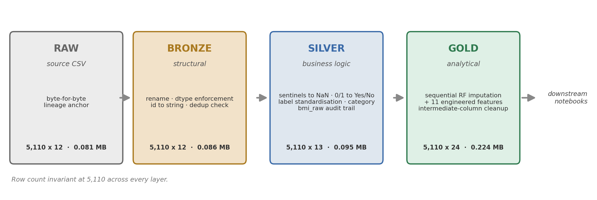
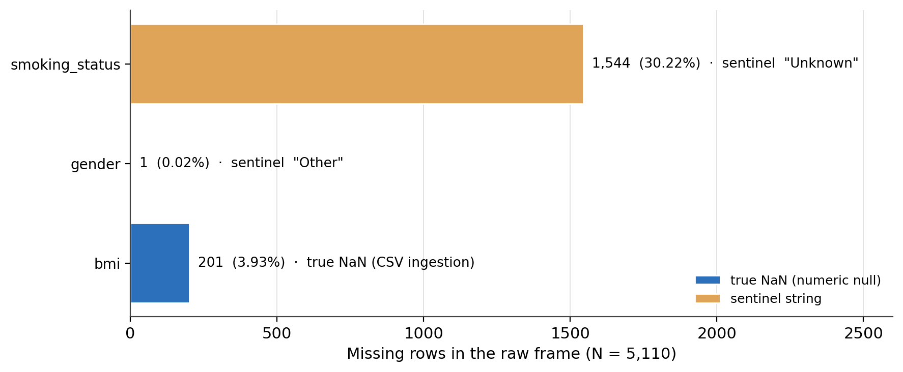
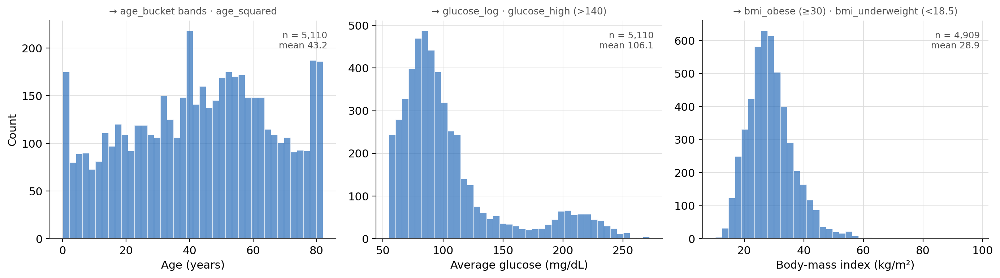
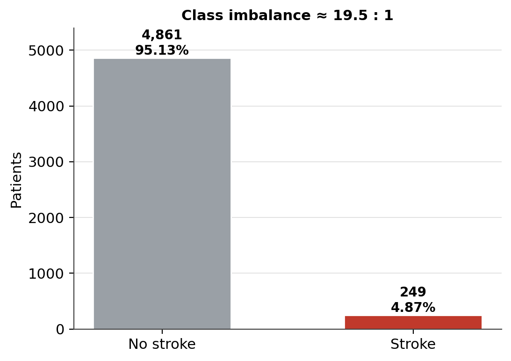
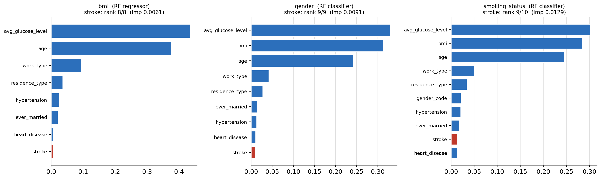
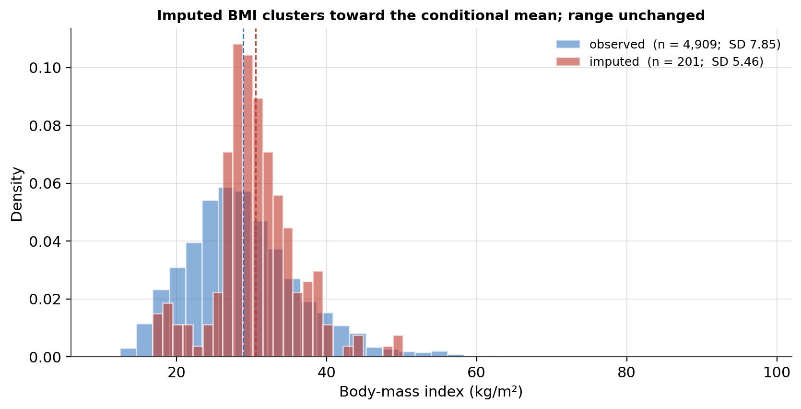
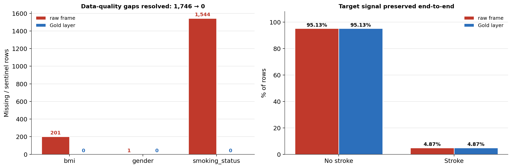

Sequential Random-Forest Imputation and a Medallion ETL Pipeline for Mixed-Type Clinical Data
Turning a raw 5,110-row healthcare CSV into a validated, fully imputed, feature-engineered Gold layer — with a Bronze → Silver → Gold contract and an explicit read on heterogeneous missingness.
A three-layer medallion ETL pipeline for a stroke-risk dataset. Heterogeneous missingness: 201 true bmi NaNs from CSV ingestion versus 1,545 sentinel-encoded gaps ("Other", "Unknown") that masquerade as valid categories. Sequential RF imputation: BMI → gender → smoking status, each imputed column feeding the next, resolving all 1,746 gaps. Leakage audit: the outcome was (imprecisely) a candidate predictor — quantified at ≤ 1.3% splitting weight in every imputer and disclosed rather than hidden. Output: a validated 5,110 × 24 Gold Parquet consumed by every downstream notebook.
medallion architecture, ETL pipeline, random forest imputation, MICE, mixed-type imputation, sentinel encoding, missing data, feature engineering, data validation, Parquet, stroke dataset, Python, scikit-learn
Overview
This is the extract–transform–load (ETL) stage of a six-notebook stroke-risk project. It has one job: turn the raw Kaggle CSV — 5,110 patient records, 12 columns — into a fully imputed, feature-engineered analytical table that the exploratory, inferential, modelling, and clustering notebooks can each load without re-running any upstream logic. The pipeline produces that table through a three-layer medallion architecture (Bronze → Silver → Gold), where each layer has a strict contract, a distinct fault-isolation boundary, and a persisted Parquet snapshot any consumer can reload independently.
The finding that shapes the whole pipeline is that the dataset’s missingness is structurally heterogeneous. bmi carries 201 true NaN values from CSV parsing. gender and smoking_status carry sentinel-encoded gaps — the strings "Other" and "Unknown" — that appear as ordinary categories in any null count and would be silently modelled as real levels. Conflating the two forms produces wrong null counts, wrong imputation targets, and a Gold layer that misrepresents what was observed versus what was inferred. The layered design surfaces and resolves the heterogeneity explicitly: Bronze normalises structure, Silver replaces sentinels with true nulls, and Gold resolves all 1,746 missing values (201 + 1 + 1,544) through a sequential random-forest imputation that respects the mixed-type nature of the targets, followed by feature engineering that adds 11 analytical columns.
Pipeline architecture
Each layer knows strictly more about the data than the one before it. Bronze knows what the data looks like; Silver knows what it means; Gold produces the analytical surface. The contract for each layer — and, just as important, what each layer must not do — is fixed (Figure 1, Table 1).
Figure 1
The Bronze → Silver → Gold Medallion Pipeline

Note. Each arrow adds knowledge, never rows. The Parquet size grows only from nullable-dtype metadata (Bronze), the bmi_raw audit column (Silver), and the 11 engineered features plus filled values (Gold).
Table 1
Layer Contracts in the Medallion Pipeline
| Layer | Knows | Does | Must not do | Persisted as |
|---|---|---|---|---|
| Raw | nothing | byte-for-byte snapshot of the source CSV | — | stroke_raw.parquet (0.081 MB) |
| Bronze | physical structure | column rename, dtype enforcement, id → string, primary-key dedup check |
replace sentinels, recode flags, derive columns | stroke_bronze.parquet (0.086 MB) |
| Silver | domain meaning | sentinel → NaN, 0/1 → "Yes"/"No", label standardisation, object → category, bmi_raw audit trail |
impute, derive cross-column features, drop rows | stroke_silver.parquet (0.095 MB) |
| Gold | analytical intent | sequential RF imputation, 11 engineered features, intermediate-column cleanup | drop rows, touch Bronze or Raw | stroke_gold.parquet (0.224 MB) |
Note. Row count is invariant at 5,110 across every layer — the single gender = "Other" row is retained throughout and its value resolved by imputation.
Raw ingestion and audit
The source CSV loads as 5,110 rows × 12 columns and is written to Parquet before any transformation as an immutable lineage anchor. A structural audit then runs against the untouched frame; no cleaning happens here, only diagnosis.
Type and structure
Four columns arrive with semantic type mismatches: hypertension, heart_disease, and stroke ingest as int64 despite being binary flags, and id ingests as int64 despite being a non-arithmetic identifier. Five string columns (gender, ever_married, work_type, Residence_type, smoking_status) are physically object but carry no categorical structure. One column violates the naming convention: Residence_type is the only Pascal-case name in an otherwise snake_case schema — a silent join-key hazard, since pandas merges are case-sensitive. No duplicate rows, no zero-variance columns, no identical column pairs.
The missingness surface
Missingness takes two structurally distinct forms (Figure 2, Table 2). Only bmi carries true NaN — 201 rows (3.93%), created when pandas’ CSV parser recognised the "N/A" token and coerced the column to float (the R pipeline preserved the string; the Python BMI_SENTINEL replacement step is therefore a no-op here). gender and smoking_status carry sentinel strings: one "Other" value in gender, and 1,544 "Unknown" values in smoking_status — 30.22% of the dataset. The "Unknown" gap is deterministic missingness (smoking history not collected or not disclosed), not missing-at-random, and conflating "Unknown" with "Never-Smoked" would corrupt any model that uses smoking as a predictor.
The raw work_type and smoking_status labels are also inconsistent — "Private", "Self-employed", "Govt_job", "children", "Never_worked" mix casing, hyphens, underscores, and abbreviations — which Silver standardises.
Table 2
The Three Missingness Populations Entering the Gold Imputer
| Column | Form | Count | % of 5,110 | Raw encoding | Resolved at |
|---|---|---|---|---|---|
bmi |
true NaN |
201 | 3.93 | float NaN (from "N/A") |
Gold — RF regressor |
gender |
sentinel string | 1 | 0.02 | "Other" |
Silver → NaN; Gold — RF classifier |
smoking_status |
sentinel string | 1,544 | 30.22 | "Unknown" |
Silver → NaN; Gold — RF classifier |
| Total | 1,746 | 34.17 |
Note. A missing-value summary run on the raw frame reports only the 201 bmi nulls; the 1,545 sentinel gaps are invisible until Silver converts them.
Figure 2
The Two Forms of Missingness in the Raw Frame

Note. Blue = numeric null handled natively by pandas; amber = sentinel string that counts as a valid category until replaced. The distinction determines the layer at which each gap is resolved.
Numeric distributions and the target
The three continuous columns motivate specific Gold transformations (Figure 3). Age (M = 43.23, range 0.08–82.0) is broadly distributed across the lifespan — the basis for the clinical age_bucket bands and age_squared. Average glucose (M = 106.15, Mdn = 91.88) is strongly right-skewed with a secondary mode near 200 mg/dL — a diabetic subpopulation, the basis for glucose_log and the > 140 mg/dL glucose_high flag. BMI (M = 28.89 over 4,909 observed rows) is right-skewed with a tail to 97.6 — the basis for the bmi_obese (≥ 30) and bmi_underweight (< 18.5) flags.
The outcome is severely imbalanced (Figure 4): 249 stroke-positive rows (4.87%) against 4,861 negative (95.13%), a 19.5:1 ratio. This is a carry-forward constraint for every downstream notebook — accuracy is not a valid metric, and a naïve “no stroke” classifier would score 95.13%.
Figure 3
Raw Distributions of the Three Continuous Columns and the Features They Motivate

Note. The subtitle on each panel names the engineered features the distribution’s shape justifies.
Figure 4
Stroke Outcome Class Imbalance in the Raw Frame

Note. Preserved unchanged through the pipeline (see Figure 7) — cleaning resolves data quality without distorting the target signal.
Bronze layer — structural cleaning
Bronze applies structural normalisation only; its contract is losslessness. Five dtype changes: id → string (identifier, not a quantity); hypertension, heart_disease, stroke → nullable Int64 (explicit nullability, encoding preserved); bmi → nullable Float64 (makes the 201 nulls explicit at the dtype level, which the Gold imputer’s np.isnan() step depends on). One rename: Residence_type → residence_type. One check: zero duplicate id values, asserted rather than silently dropped. Shape unchanged at 5,110 × 12; Parquet grows 0.081 → 0.086 MB, the overhead of nullable-dtype metadata. Six columns are deliberately untouched — their issues are semantic, and semantics belong to Silver.
Silver layer — business-logic cleaning
Silver applies five categories of transformation and adds one audit column:
- Sentinel replacement.
gender = "Other"→NaN(one row, retained — too rare to be a stable category; its other 11 fields are valid).smoking_status = "Unknown"→NaN(1,544 rows) — making the deterministic gap semantically consistent withbmi’s structural nulls so the Gold imputer treats all three columns uniformly. - Binary recoding.
hypertension,heart_disease,stroke:0/1→"No"/"Yes", so no downstream pipeline can treat a flag as a continuous quantity and the reference level is unambiguous. - Label standardisation. The inconsistent raw labels are mapped to a canonical hyphenated title case (Table 3).
- Categorical promotion. All eight string columns →
categorydtype, applied after all string edits. Memory drops from 2.10 MB (Bronze) to 0.51 MB. - Audit-trail preservation. The pre-imputation
bmiis copied tobmi_raw; after Gold fillsbmi,bmi_rawkeeps its 201<NA>entries as a permanent record of which values were observed. Downstream sensitivity analyses partition onbmi_raw.notna().
Seven programmatic assertions confirm every transformation reached every affected row (zero residual sentinels, zero residual integer flags, zero residual raw labels, bmi_raw and bmi both at 201 nulls, row count 5,110). Shape 5,110 × 13.
Table 3
Raw-to-Canonical Label Standardisation
| Column | Raw labels | Canonical labels |
|---|---|---|
work_type |
Private, Self-employed, Govt_job, children, Never_worked |
Private-Work, Self-Employed, Government-Job, Child-Care, Never-Worked |
smoking_status |
never smoked, formerly smoked, smokes, Unknown |
Never-Smoked, Formerly-Smoked, Currently-Smokes (+ Unknown → NaN) |
hypertension / heart_disease / stroke |
0, 1 |
No, Yes |
Note. The canonical conventions match the project’s parallel R pipeline for cross-language traceability.
Gold layer — imputation and feature engineering
Sequential random-forest imputation
The three columns with missing values — bmi (continuous), gender (binary), smoking_status (three-level) — are not missing independently; age, work type, and glucose all carry information about the likely values. A marginal imputer (most_frequent / mean) ignores that structure; a per-column model respects it. sklearn’s IterativeImputer cannot handle mixed-type targets with a single estimator, so the pipeline runs three sequential random-forest fits — one RandomForestRegressor for bmi, two RandomForestClassifiers for gender and smoking_status — functionally one round of MICE (van Buuren & Groothuis-Oudshoorn, 2011) with a random-forest learner per column (Stekhoven & Bühlmann, 2012). The order is deliberate: bmi is imputed first from the eight complete predictors, then the completed bmi becomes a predictor for gender, then completed bmi and gender both become predictors for smoking_status — each step sees a richer predictor set than a parallel approach would give it. Categorical targets are label-encoded before fitting and decoded against the Silver category levels afterward, so no new level can appear. The seed random_state = 412 aligns with the R pipeline’s set.seed(412).
A methodological imprecision, named plainly. The predictor matrix for all three imputers included stroke as a candidate. The outcome is not available at genuine prediction time, and its inclusion is not defensible on first principles. Rather than leave that as a theoretical concern, a feature-importance audit of the three fitted models quantified it (Figure 5): stroke ranked last or next-to-last in every model — 8th of 8 for the BMI regressor (importance 0.0061), 9th of 9 for gender (0.0091), 9th of 10 for smoking status (0.0129) — never exceeding 1.3% of splitting weight, with avg_glucose_level and age dominating all three. The leakage is real in principle but negligible in practice; the imputed values should be read with that caveat rather than as fully outcome-independent.
The imputation outcome (Table 4): all 1,746 gaps filled, zero nulls remaining. The single gender gap resolved to Female. The 1,544 smoking_status gaps distributed as Never-Smoked +1,212, Formerly-Smoked +237, Currently-Smokes +95. BMI’s mean shifted 28.89 → 28.96 and its SD tightened 7.85 → 7.78 — the expected signature of values imputed toward the conditional mean, with the range unchanged (Figure 6). The 201 imputed BMI values are themselves narrower (SD 5.46 vs. 7.85) and slightly higher (M 30.58) than the observed rows — flagged for downstream BMI sensitivity analyses.
Table 4
Sequential RF Imputation Outcome
| Step | Column | Model | n filled | Predictors | Result |
|---|---|---|---|---|---|
| 1 | bmi |
RandomForestRegressor |
201 | 8 complete columns | M 28.89 → 28.96; SD 7.85 → 7.78; range unchanged |
| 2 | gender |
RandomForestClassifier |
1 | 8 + imputed bmi |
→ Female (Female 2,994 → 2,995) |
| 3 | smoking_status |
RandomForestClassifier |
1,544 | 8 + imputed bmi + imputed gender |
Never 1,892 → 3,104; Formerly 885 → 1,122; Current 789 → 884 |
Note. 100 trees per forest, random_state = 412. No new category levels introduced (closed-vocabulary decode).
Figure 5
Imputer Feature Importances — the Stroke-as-Predictor Leakage Audit

Note. stroke (red) is last or next-to-last in every imputer, at ≤ 1.3% importance. The leakage is disclosed and bounded, not removed.
Figure 6
Observed Versus Imputed BMI

Note. Imputed values cluster toward the conditional mean of the predictor space — expected for model-based imputation — without introducing out-of-range values.
Feature engineering
Gold adds 11 analytical columns (Table 5) and drops three intermediate scaffolding columns (hypertension_num, heart_disease_num, cardio_combo) that are collinear with their categorical parents. Final shape: 5,110 × 24. Key distributions: age_bucket = young 1,515 / mid 1,018 / mature 1,201 / senior 1,376; glucose_high flags 821 rows (16.1%); is_smoker flags 2,006 (39.3%); bmi_obese flags 2,021 (39.6%).
Table 5
The 11 Engineered Gold Features
| Feature | Definition | Rationale |
|---|---|---|
age_squared |
age² | linear handle on accelerating age–risk relationship |
age_bucket |
age bands [0, 30, 45, 60, ∞) | clinically meaningful strata, not quantile cuts |
is_smoker |
1 if formerly or currently smokes | clinical grouping; more stable than 3-level status |
bmi_obese |
1 if BMI ≥ 30 | WHO obesity threshold |
bmi_underweight |
1 if BMI < 18.5 | WHO underweight threshold |
glucose_log |
log1p(avg_glucose_level) | compresses the right tail for gradient models |
glucose_high |
1 if avg_glucose_level > 140 | pre-diabetic clinical threshold |
age_glucose |
age × glucose_log | age-related decline × metabolic stress |
age_bmi |
age × BMI | age × adiposity, non-linear on CV risk |
hyper_glucose |
hypertension × glucose_high | co-occurring vascular strain |
smoker_obese |
is_smoker × bmi_obese | dual lifestyle risk burden |
Note. All interaction terms are candidate features; the modelling notebook decides which survive selection. id is retained (exclusion deferred downstream).
Before-and-after impact
The pipeline’s net effect is a complete analytical surface with the target signal intact (Figure 7). The 1,746 raw missing-and-sentinel gaps across bmi, gender, and smoking_status are driven to zero in Gold. The 4.87% stroke rate is identical in the raw frame and the Gold layer — cleaning and imputation resolved data quality without touching the outcome distribution.
Figure 7
Pipeline Impact: Gaps Resolved, Target Signal Preserved

Note. Left — data-quality gaps by column, raw versus Gold. Right — stroke class proportions, raw versus Gold.
Validation
Three checks confirm the Gold Parquet is correctly serialised and analytically ready. A serialisation round-trip reloads the file and asserts zero nulls across 11 primary analytical columns — this verifies that category, nullable Float64, and string dtypes all survive Parquet without a silent cast. A shape verification asserts the three layers against hardcoded expected dimensions: Bronze (5,110 × 12), Silver (5,110 × 13), Gold (5,110 × 24) — a deviation is a pipeline bug, not a configuration value. The row count holds at 5,110 across every layer, confirming no rows were dropped and the single gender = "Other" row was retained end to end. All checks pass.
Carry-forward findings
Four facts surfaced by the pipeline that every downstream notebook must account for:
- Class imbalance. 249 positives (4.87%), 19.5:1. Requires resampling, class weighting, or threshold calibration; accuracy is not a valid metric.
bmi_rawaudit column. Its 201<NA>entries mark exactly which rows received an imputed BMI. Observed-only analyses filter onbmi_raw.notna(); BMI odds ratios and coefficients warrant an observed-only sensitivity check because the imputed values are measurably narrower.- Smoking imputed at scale. 1,544 values (30.22%) are modelled, not observed. Models that weight
smoking_statusoris_smokerheavily should be tested for imputation sensitivity; a re-run with a different seed would quantify stability. - Age is the dominant univariate signal. Stroke concentrates in older adulthood (1,376 senior-band rows); any model excluding
age/age_squaredwill likely underperform a simple age threshold.
Tools and references
Built in Python with pandas and pyarrow for the medallion layers and scikit-learn for the random-forest imputers. Clinical thresholds follow the WHO body-mass-index classification. The sequential-fit imputation is a single-round instance of multivariate imputation by chained equations with tree learners.
Harris, C. R., Millman, K. J., van der Walt, S. J., Gommers, R., Virtanen, P., Cournapeau, D., Wieser, E., Taylor, J., Berg, S., Smith, N. J., Kern, R., Picus, M., Hoyer, S., van Kerkwijk, M. H., Brett, M., Haldane, A., del Río, J. F., Wiebe, M., Peterson, P., … Oliphant, T. E. (2020). Array programming with NumPy. Nature, 585, 357–362. https://doi.org/10.1038/s41586-020-2649-2
Pedregosa, F., Varoquaux, G., Gramfort, A., Michel, V., Thirion, B., Grisel, O., Blondel, M., Prettenhofer, P., Weiss, R., Dubourg, V., Vanderplas, J., Passos, A., Cournapeau, D., Brucher, M., Perrot, M., & Duchesnay, É. (2011). Scikit-learn: Machine learning in Python. Journal of Machine Learning Research, 12, 2825–2830.
Stekhoven, D. J., & Bühlmann, P. (2012). MissForest — non-parametric missing value imputation for mixed-type data. Bioinformatics, 28(1), 112–118. https://doi.org/10.1093/bioinformatics/btr597
The pandas development team. (2020). pandas-dev/pandas: Pandas (Version latest) [Computer software]. Zenodo. https://doi.org/10.5281/zenodo.3509134
van Buuren, S., & Groothuis-Oudshoorn, K. (2011). mice: Multivariate imputation by chained equations in R. Journal of Statistical Software, 45(3), 1–67. https://doi.org/10.18637/jss.v045.i03
World Health Organization. (2010). A healthy lifestyle — WHO recommendations (Body mass index classification). World Health Organization.
fedesoriano. (2021). Stroke prediction dataset [Data set]. Kaggle. https://www.kaggle.com/datasets/fedesoriano/stroke-prediction-dataset
Pipeline and figures by the author. The Gold Parquet described here is the sole data input for every downstream notebook in the project.